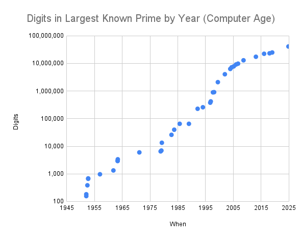

The Largest Known prime by Year: A Brief History
By Chris Caldwell
The largest known prime today is the 41,024,320 digit Mersenne prime 2136279841-1 found in October 2024, but how big have the "largest known primes" been historically? Historically, how have these primes been found? We will briefly discuss each of these questions below.
Contents
- Before Electronic Computers
- Table of the Record Prime by Year
- The Age of Electronic Computers
- Epilogue: No more predictions
- The First Billion Digit Prime
Part One: Before Electronic Computers
For information on the French Monk Marin Mersenne's prime conjecture and its errors, see this link
Many early writers felt (incorrectly) that if p was prime, then so was Mp = 2p-1. These numbers, now called the Mersenne Numbers, were the focus of most of the early searches for large primes. The early history of these numbers is strewn with many false claims of primality, even by such notables as Mersenne, Leibniz, and Euler. So we give credit to our first record holder with some doubt:
by 1588 Pietro Cataldi had correctly verified that 217-1 = 131071 and 219-1 = 524287 are both prime [Cataldi1603].
But Cataldi also had incorrectly stated 2n-1 was also prime for each of 23, 29, 31 and 37. This is interesting because Cataldi made his discoveries by constructing what Shanks calls "the first extensive table of primes--up to 750" [Shanks78, p14]. These tables are big enough to show 219-1 is prime (its square root is approximately 724) but not large enough to handle these four larger numbers!
Note: Some writers (e.g., [Picutti1989] and [BS96, p309]) include the primes 8191=213-1 (before 1458, Codice Palatino 573) and 131071=217-1 (1460, Codex Ottb. Lat 3307) in their list of records. But we omit them for lack of evidence that they were proven primes at that time, rather than just lucky guesses.
In 1640 Fermat showed that if p is an odd prime, then all prime divisors of 2p-1 have the form 2kp+1. He then quickly showed Cataldi was wrong about 23 (which has the factor 47 with k=1) and 37 (factor 223 at k=3). Finally, in 1738, Euler showed Cataldi was also wrong about 29 by finding the divisor 233. Here, using Fermat's result, k=4. This is just the second number to try using Fermat's result as k=2 and k=3 yield composites (so I would guess Fermat also knew of this factor). Note that Cataldi's errors were shown with small factors found in Cataldi's own table of primes, and none took more than two trial divisions!
Euler gives us the first clear record (except perhaps for the date) by proving Cataldi was correct about 31:
by 1772 Euler had used clever reasoning and trial division to show 231-1 = 2147483647 is prime.
The actual date must be between 28 October 1752 when Euler sent a letter to Goldbach [text from Euler Archive] stating that he was uncertain about this number (even though he had earlier listed it as prime) and 1772 when a letter [text] was published from Euler to Bernoulli stating he proved 231-1 prime by showing all prime divisors of 231-1 must have one of the two forms 248n+1 and 248n+63, and then dividing by all such primes less than 46339 [Dickson19, pp18-19]. This requires a simple theorem which is stronger than Fermat's result above. (Euler had listed 231-1 a prime as early as 1732, but he did so along with 241-1 and 247-1 both of which were composite [translation].)
Note: Some writers (e.g., [BS96, p309]) include the primes 999999000001 (1851, "found" by Looff) and 67280421310721 (1 Jan. 1855, Clausen) in their tables. The first appeared in a table of Looff with a question mark, but Reuschle [Reuschle1856, pp.3,18] claims Looff had proved it prime. Thomas Clausen provided the factorization 274177 · 67280421310721 of 264+1 in a letter to Gauss dated 1 Jan 1855 stating both factors were prime [Biermann1964]. But it remains a claim without a method.
By 1867 Landry had found a larger prime, still by trial division, as a factor of 259-1 (namely (259-1)/179951 = 3203431780337), this prime held the record longer than any other non-Mersenne would (before or after his discovery). However all such efforts were to be eclipsed by a new mathematical discovery, so we pause for a moment to summarize all record primes (that I know about) before modern computers. (In the long run, it is always the mathematics that decide how large of prime we can find.)
| Number | Digits | Year | Prover |
Method
|
|---|---|---|---|---|
| 217-1 | 6 | 1588 | Cataldi | trial division |
| 219-1 | 6 | 1588 | Cataldi | trial division |
| 231-1 | 10 | 1772 | Euler | trial division++ |
| (259-1)/179951 | 13 | 1867 | Landry | trial division++ |
| 2127-1 | 39 | 1876 | Lucas | Lucas sequences |
| (2148+1)/17 | 44 | 1951 | Ferrier | Proth's theorem |
By 1876 Lucas had developed a clever test to determine if Mersenne numbers were prime. His method was later made even simpler by Lehmer in the 1930's, and is still used to discover the record primes!
In 1876 Lucas proved that 2127-1 = 170141183460469231731687303715884105727 was prime.
"This remained the largest known prime until 1951" [HW79, p16] And this record, which stood for 75 years, may stand forever as the largest prime found by hand calculations.
In 1951 Ferrier used a mechanical desk calculator and techniques based on partial inverses of Fermat's little theorem (see the pages on finding and proving primes) to slightly better this record by finding a 44 digit prime:
In 1951 Ferrier found the prime (2148+1)/17 = 20988936657440586486151264256610222593863921.
With this record we end the period before electronic computers, for in this same year a new record of 79 digits was to be set by computer.
Note: It is quite difficult to place Ferrier's discovery among Miller & Wheeler's chronologically. We follow the traditional order and put Ferrier's first, but there is good reason to doubt this.
For more information see The History of the Theory of Numbers by Leonard Dickson [Dickson19].
Part Two: The Age of Electronic Computers
In 1951 Miller and Wheeler began the electronic computing age by finding several primes:
as well as the new 79 digit record:
180(M127)2+1 (here M127 = 2127-1) [MW51].
This record was soon eclipsed by Raphael Robinson's discoveries of five new Mersennes the very next year using the SWAC (Standards Western Automatic Computer). This was the first program that Robinson had ever written, and it ran the very first time he tried it! Not only that, but his program found two new record primes that very day! He writes [Robinson54]:
The program was first tried on the SWAC on January 30, and two new primes were found that day [M521, M607], three other primes were found on June 25 [M1279], October 7 [M2203] and October 9 [M2281].
It is interesting to note that in 1949 the topologist M. H. A Newman used the prototype Manchester electronic computer (with 1024 bits of storage) to make the first attempt to find Mersenne primes by computer. Perhaps because Alan Turing worked on this machine from 1948 to 1950, and improved the program by Newman, this first attempt at finding primes by (electronic) computers is sometimes attributed to him (e.g., [Robinson54] and [Ribenboim95, p93]). The excellent Alan Turing Internet Scrapbook has a picture of this machine.
We see the records of Miller, Wheeler, and Robinson as the first points on the following graph--note the vertical scale!
Progress over the next few years was as steady as the increase in speed of computers. Riesel found M3217 using the Swedish machine BESK; Hurwitz found M4253 and M4423 using an IBM 7090 (see next paragraph); Gillies used the ILLIAC-2 to find M9689, M9941 and M11213. Tuckerman found M19937 using an IBM360.
Surprisingly Hurwitz knew about M4423 seconds before M4253 (because of the way the output was stacked). John Selfridge asked "Does a machine result need to be observed by a human before it can be said to be 'discovered'?" To which Hurwitz replied, "forgetting about whether the computer knew, what if the computer operator who piled up the output looked?" In the table below I decided that Hurwitz discovered the prime when he read the output, so M4253 was never the largest known prime.
| Number | Digits | Year | Machine | Prover |
|---|---|---|---|---|
| 180(M127)2+1 | 79 | 1951 | EDSAC1 | Miller & Wheeler |
| M521 | 157 | 1952 | SWAC | Robinson (Jan 30) |
| M607 | 183 | 1952 | SWAC | Robinson (Jan 30) |
| M1279 | 386 | 1952 | SWAC | Robinson (June 25) |
| M2203 | 664 | 1952 | SWAC | Robinson (Oct 7) |
| M2281 | 687 | 1952 | SWAC | Robinson (Oct 9) |
| M3217 | 969 | 1957 | BESK | Riesel |
| M4423 | 1,332 | 1961 | IBM7090 | Hurwitz |
| M9689 | 2,917 | 1963 | ILLIAC 2 | Gillies |
| M9941 | 2,993 | 1963 | ILLIAC 2 | Gillies |
| M11213 | 3,376 | 1963 | ILLIAC 2 | Gillies |
| M19937 | 6,002 | 1971 | IBM360/91 | Tuckerman |
| M21701 | 6,533 | 1978 | CDC Cyber 174 | Noll & Nickel |
| M23209 | 6,987 | 1979 | CDC Cyber 174 | Noll |
| M44497 | 13,395 | 1979 | Cray 1 | Nelson & Slowinski |
| M86243 | 25,962 | 1982 | Cray 1 | Slowinski |
| M132049 | 39,751 | 1983 | Cray X-MP | Slowinski |
| M216091 | 65,050 | 1985 | Cray X-MP/24 | Slowinski |
| 391581 ·2216193-1 | 65,087 | 1989 | Amdahl 1200 | Amdahl Six |
| M756839 | 227,832 | 1992 | Cray-2 | Slowinski & Gage et al. (notes) |
| M859433 | 258,716 | 1994 | Cray C90 | Slowinski & Gage |
| M1257787 | 378,632 | 1996 | Cray T94 | Slowinski & Gage |
| M1398269 | 420,921 | 1996 | Pentium (90 Mhz) | Armengaud, Woltman, et al. [GIMPS] |
| M2976221 | 895,932 | 1997 | Pentium (100 Mhz) | Spence, Woltman, et al. [GIMPS] |
| M3021377 | 909,526 | 1998 | Pentium (200 Mhz) | Clarkson, Woltman, Kurowski, et al. [GIMPS, PrimeNet] |
| M6972593 | 2,098,960 | 1999 | Pentium (350 Mhz) | Hajratwala, Woltman, Kurowski, et al. [GIMPS, PrimeNet] |
| M13466917 | 4,053,946 | 2001 | AMD T-Bird (800 Mhz) | Cameron, Woltman, Kurowski, et al. [GIMPS, PrimeNet] |
| M20996011 | 6,320,430 | 2003 | Pentium (2 GHz) | Shafer, Woltman, Kurowski, et al. [GIMPS, PrimeNet] |
| M24036583 | 7,235,733 | 2004 | Pentium 4 (2.4GHz) | Findley, Woltman, Kurowski, et al. [GIMPS, PrimeNet] |
| M25964951 | 7,816,230 | 2005 | Pentium 4 (2.4GHz) | Nowak, Woltman, Kurowski, et al. [GIMPS, PrimeNet] |
| M30402457 | 9,152,052 | 2005 | Pentium 4 (2GHz upgraded to 3GHz) | Cooper, Boone, Woltman, Kurowski, et al. [GIMPS, PrimeNet] |
| M32582657 | 9,808,358 | 2006 | Pentium 4 (3 GHz) | Cooper, Boone, Woltman, Kurowski, et al. [GIMPS, PrimeNet] |
| M43112609 | 12,978,189 | 2008 | Intel Core 2 Duo E6600 CPU (2.4 GHz) | E_Smith, Woltman, Kurowski, et al. [GIMPS, PrimeNet] |
| M57885161 | 17,425,170 | 2013 | Intel Core2 Duo E8400 (3 GHz) | Cooper, Woltman, Kurowski, et al. [GIMPS, PrimeNet] |
| M74207281 | 22,338,618 | 2016 | Intel I7-4790 CPU | Cooper, Woltman, Kurowski, Blosser, et al. [GIMPS, PrimeNet] |
| M77232917 | 23,249,425 | 2018 | Intel i5-6600 CPU | Pace, Woltman, Kurowski, Blosser, et al. [GIMPS, PrimeNet] |
| M82589933 | 24,862,048 | 2018 | Intel i5-4590T CPU | Laroche, Woltman, Blosser, et al. [GIMPS, PrimeNet] |
| M136279841 | 41,024,320 | 2024 | NVIDIA A100 GPU | Durant, Preda, Woltman, Blosser, et al. [GIMPS, PrimeNet] |
Curiously the prime M74207281 was detected by a machine months before a human noticed it--see the press release for this prime.
All of the Mersenne records were found using the Lucas-Lehmer test and the other two were found using Proth's Theorem (or similar results). The Amdahl Six is J Brown, C Noll, B Parady, G Smith, J Smith and S Zarantonello.
Epilogue: No Predictions
When will we have a one billion digit prime? Good question! In the early days of the GIMPS search, my predictions were reasonable, but recently things have taken a turn (see the graph) that defies prediction using simple regressions and past history. My last prediction was way off!
I am getting out of the time prediction business. So we will end with a linear graph and a gratuitous cubic below. Useful future predictions should be based not only on heuristics such as found on the page Where is the Next Mersenne?, but should also track the usage data for projects like GIMPS. It is the current participants, not the past, which will find the next prime.